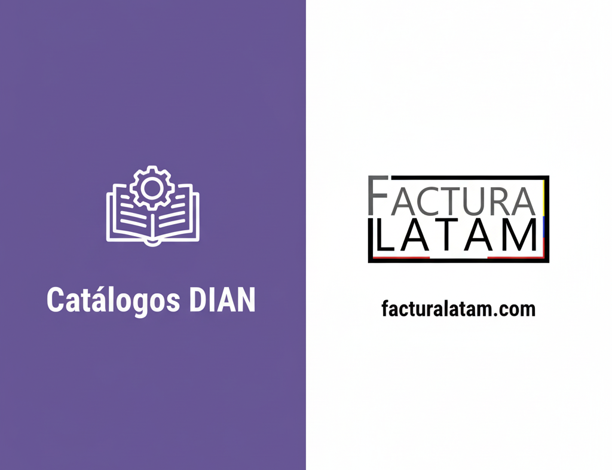

Este módulo proporciona catálogos de datos maestros necesarios para la localización de Colombia, incluyendo tipos de documentos, tipos de organizaciones, tipos de régimen, y más. Es esencial para implementar correctamente la facturación electrónica y el cumplimiento normativo colombiano en Odoo.
Este módulo forma parte del ecosistema completo de localización colombiana para Odoo:
base - Módulo base de Odool10n_co - Localización base de Colombiaaccount - Contabilidadupdate_from_csv - Actualización desde CSVl10n_co_journal_sequence - Secuencias de diarioshr_payroll_community - Nómina comunitariahr_payroll_account_community - Contabilización de nóminaMódulos complementarios del ecosistema:
l10n_co_edi_electronic_invoice - Facturación electrónica DIAN (obtenlo en FacturaLatam)l10n_co_global_discount - Gestión de descuentosl10n_co_layout_custom - Plantillas PDF profesionalesl10n_co_import_electronic_invoice - Importación XML facturas